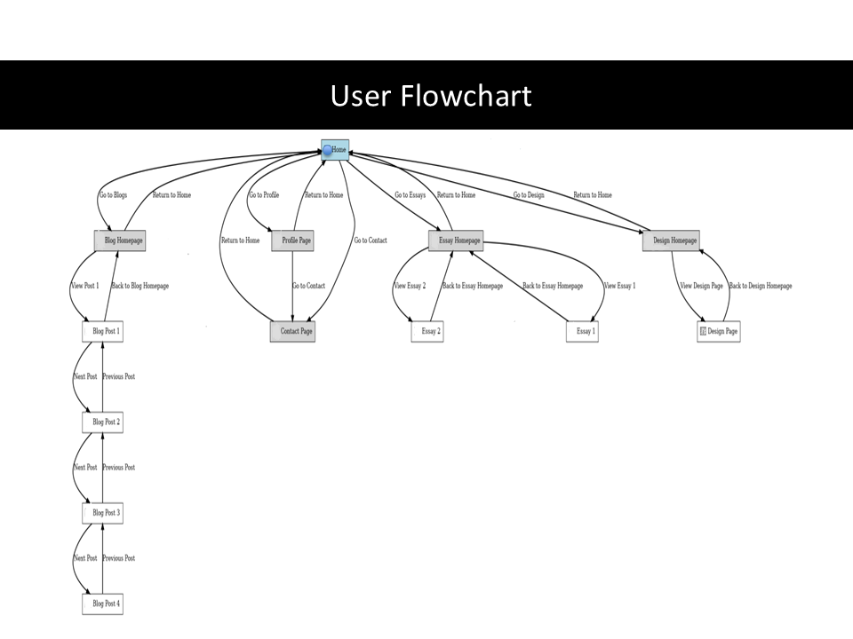

Content Mapping
Below is a picture of the content you would find in my website


User Flow
The User Flowchart visually represents the behavior of different screens: The Homepage acts as the central hub, linking to all major sections (Blogs, Profile, Contact, Essays, and Design). The Blog Homepage leads to individual blog posts (1-4) with navigation for “Next” and “Previous” posts. The Essay Homepage provides access to Essay 1 and Essay 2, with an option to return. The Design Page follows a similar pattern, allowing users to explore more in-depth design content. Each page allows backtracking to previous sections, ensuring a fluid user experience. This allows for exploration where users can navigate freely between sections, using the homepage and subpages as hubs. Users interact with structured content like blog grids, essays, and design projects aiding engagement, and there are logical navigation paths, including back buttons, to prevent dead ends.
Design Wireframes
Colour Scheme

The colors for my website should consist of soft pastels and light tones. These create a soft, inviting, and dreamy feel, aligning with a modern, artsy Pinterest-inspired look. Neon pink, electric blue, and rich purples add contrast. This creates a playful and dynamic effect, preventing the design from feeling too muted. Subtle off-whites and pale beige tones balance out the vibrancy. This helps in maintaining a clean, sophisticated look while allowing accent colors to pop. There are changes that I would like to make to the design wireframes going forward. For the backgrounds, I could use neutral pastels (light pinks, whites, and blues) to maintain a clean, airy aesthetic, and for the accents and highlights, I could incorporate neon pinks, purples, and blues for buttons, icons, and interactive elements. Pages with important information would have a clean, clear pastel color to aid readability. I would add hover effects and interactions. Use color shifts between pastels and neons for engaging micro-interactions.
Typography

I chose these fonts to match my website’s modern, artsy, simplistic, and Pinterest-like aesthetic. Each font aligns with these principles in different ways, like the Serif fonts are elegant and timeless. Playfair Display: Adds a sophisticated and artistic feel while remaining modern. Sans-serif fonts provide that minimalistic and clean look. Montserrat: A contemporary, geometric font that is clean and stylish. Poppins: A versatile and soft sans-serif that works well for both headings and body text.